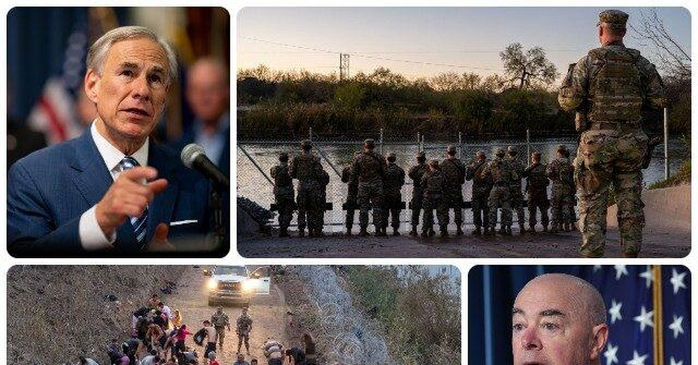

BORDER SHOWDOWN: Texas Must Give Feds Access by Jan. 18, or Else, Says Biden AdminA strongly worded letter from the Department of Homeland Security to the State of Texas demands access to the U.S.-Mexico border on land seized by the State in Eagle Pass. DHS officials ordered the State to cease and desist its efforts to block Border Patrol’s access in and around Shelby Park “and remove all barriers to access” by the end of the day on January 17. Texas’s actions are clearly unconstitutional and are actively disrupting the federal government’s operations,” DHS General Counsel Jonathan E. Meyer wrote in a letter to Texas Attorney General Ken Paxton. “We demand that Texas cease and desist its efforts to block Border Patrol’s access in and around the Shelby Park area and remove all barriers to access in the Shelby Park area.” The counsel sets a deadline of the end of the day on January 17. “The recent actions by the State of Texas have impeded (emphasis added) operations of the Border Patrol. Those actions conflict with the authority and duties of Border Patrol under federal law and are preempted under the Supremacy Clause of the Constitution,” Meyer stated. The use of the word “impeded” by the DHS general counsel could imply a threat of criminal action against officers and agents of the State of Texas who are carrying out the orders of Governor Abbott to secure Shelby Park and prevent Border Patrol’s entry to the area. Under federal law 18 U.S. Code § 111, it is a federal crime to “impede” or “interfere” with certain officers or employees of the federal government. “Whoever forcibly assaults, resists, opposes, impedes, intimidates, or interferes with any person designated in section 1114 of this title while engaged in or on account of the performance of his official duties, shall be fined not more than $5,000 or imprisoned not more than three years, or both,” sentencing guidelines for the statute state. Breitbart Texas reached out to DHS, CBP, and the Border Patrol for clarification of the use of the phrase “impeded” and whether this constitutes a threat of criminal prosecution. A response was not available by press time. On the evening of January 11, the Texas Military Department seized Shelby Park in Eagle Pass and expelled Border Patrol agents, Breitbart Texas reported. Border Patrol officials told Breitbart Texas that Texas National Guard units quickly moved into Shelby Park in Eagle Pass on Thursday. The guardsmen erected barriers around the park and instructed Border Patrol agents to leave the area. The following night, a Mexican migrant woman and two small children drowned in the Rio Grande near Shelby Park. Mexican officials rescued other migrants in distress and recovered the bodies of the three drowned migrants. Biden administration officials and U.S. Representative Henry Cuellar (D-TX) blamed the drownings on Governor Abbott’s decision to keep Border Patrol agents from accessing the park. Abbott responded, calling the claims “wholly inaccurate.” According to a timeline provided by the Texas Military Department on Sunday, the Border Patrol’s request to enter the park came after the migrant drownings had already occurred and the bodies of the family were being pulled from the water by Mexican authorities, Breitbart’s Randy Clark reported. A CBP source confirmed the probability of the timeline with Breitbart Texas, adding, “More than likely, they probably had already drowned. There were a lot of moving pieces trying to get state authorities on the phone to gain access and that took time.” However, the DHS letter continues to push the assertion that access to the park contributed to the migrant drownings. Meyer wrote: On January 12, 2024, upon learning from Grupo Beta, a group affiliated with the National Institute of Migration of Mexico, that a group of migrants was attempting to cross the river, Border Patrol contacted Texas officials and requested access to the border. Texas refused. Later, a rescue team from Mexico was able to rescue two individuals from the group, both with signs of hypothermia. Three individuals drowned. Texas has demonstrated that even in the most exigent circumstances, it will not allow Border Patrol access to the border to conduct law enforcement and emergency response activities. In an apparent response to the DHS letter, Governor Abbott posted on X, “Biden is doing everything possible to eliminate strategies that actually prevent illegal immigrants from entering our country. Texas will continue to use every tool possible to block illegal immigration.” Breitbart Texas reached out to the Office of the Texas Governor for clarification of the State’s view of language in the DHS letter. A response was not immediately available. Bob Price is the Breitbart Texas-Border team’s associate editor and senior news contributor. He is an original member of the Breitbart Texas team. Price is a regular panelist on Fox 26 Houston’s What’s Your Point? Sunday morning talk show. He also serves as president of Blue Wonder Gun Care Products. Follow him on Twitter @BobPriceBBTX. Randy Clark contributed to this report. Follow him on Twitter @RandyClarkBBTX. COMMENTS Please let us know if you're having issues with commenting. |
 |